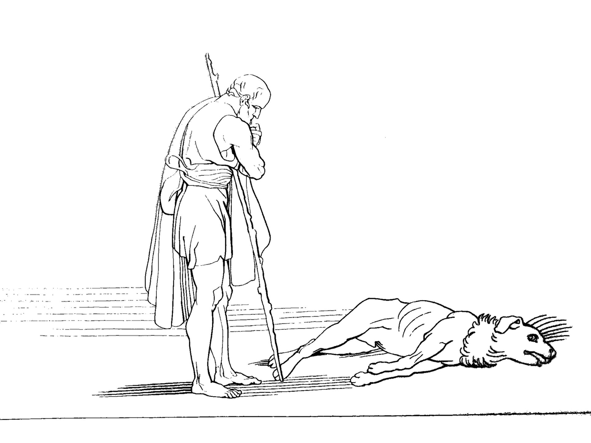

Песнь 17 из 24
Одиссей-нищий во дворце. Пёс Аргус

Кратко
Телемах идёт во дворец, следом Эвмей ведёт «нищего» Одиссея. У ворот старый пёс Аргус, когда-то выращенный Одиссеем, узнаёт хозяина, виляет хвостом — и тут же издыхает. В зале Одиссей просит подаяние у женихов, испытывая их; наглый Антиной швыряет в него скамейкой. Пенелопа, услышав об обиде странника, хочет с ним поговорить.
Главные моменты
- Трогательная сцена с псом Аргусом (верность и узнавание).
- Женихи испытываются гостеприимством — Антиной его проваливает.
- Пенелопа проявляет интерес к страннику.
Значение
Нагнетает несправедливость женихов, оправдывая будущую кару.